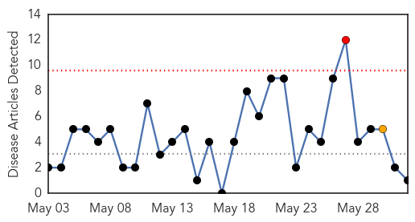
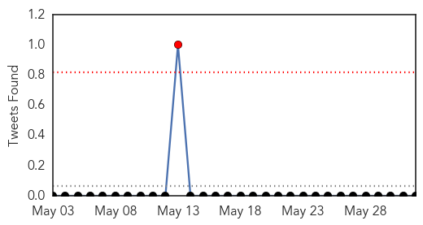
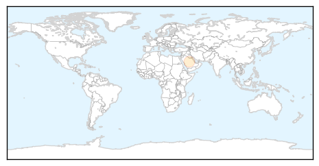

Dengue Fever
30-Day Web Trend
1 alerts, 1 warnings

30-Day Twitter Trend
0 alerts, 0 warnings

Article Locations
Article Confidences

Top Articles:
Top Tweets:
-
No tweets found for Jun 01, 2015
Unknown
30-Day Web Trend
0 alerts, 0 warnings

30-Day Twitter Trend
1 alerts, 0 warnings

Article Locations

Article Confidences
Top Articles:
- 1.000
- Asia MERS Outbreak Alarms Authorities
- 1.000
- South Korean health chief apologises over MERS outbreak
- 0.999
- South Korean president scolds health officials over MERS scare
- 0.999
- Asia MERS Outbreak Alarms Authorities
- 0.999
- MERS scare: South Korean president scolds health officials
- 0.999
- South Korea announces first two Mers deaths: Yonhap, East Asia News & Top Stories
- 0.999
- Seoul Korea president scolds health officials over MERS scare
- 0.999
- South Korea president scolds health officials over Mers scare
- 0.999
- South Korea President Park Geun-Hye Scolds Health Officials Over MERS Scare
- 0.999
- South Korea President Scolds Health Officials Over MERS Scare
- 0.999
- Korean health officials scolded over Mers scare
- 0.999
- Korean health officials scolded over Mers scare
- 0.999
- 18 MERS-Infected South Koreans Triggers Panic; President Scolds Health Officials’ Incompetence : Trending : Chinatopix
- 0.999
- 'SKorea announces first two MERS deaths'
- 0.999
- Asia MERS Outbreak Alarms Authorities
- 0.999
- Hot Issues of the Week
- 0.999
- Three new MERS cases and first possible fatality-INSIDE Korea JoongAng Daily
- 0.999
- South Korean woman in contact with MERS patient dies
- 0.999
- (2nd LD) South Korea reports first two MERS-related deaths
- 0.999
- The Chosun Ilbo (English Edition): Daily News from Korea
- 0.998
- (MERS virus) South Korea in distress after bungling action on infections
- 0.998
- S. Korea to ban people exposed to MERS from leaving country – The Korea Times
- 0.998
- S. Korea to ban people exposed to MERS from leaving country
- 0.998
- S. Korea confirms 3 more MERS cases, total rises to 18
- 0.998
- MERS-infected S. Koreans rise to 18, no tertiary infection reported
- 0.998
- Almost 700 isolated in S. Korea over deadly MERS virus fears
- 0.998
- (4th LD) S. Korea to ban people exposed to MERS from leaving country
- 0.998
- 13 People near MERS Patient out of Contact
- 0.997
- S. Korea confirms 3 more MERS cases, total rises to 18
- 0.997
- S. Korea's health minister apologizes for MERS cases
- 0.997
- MERS-infected S. Koreans rise to 18, no tertiary infection reported - Xinhua
- 0.997
- (LEAD) S. Korea confirms 3 more MERS cases, total rises to 18
- 0.995
- Breaking: Korea reports its first two MERS-related deaths
- 0.995
- 77 people had contact with MERS patient: China
- 0.994
- 77 people in China had contact with South Korean Mers patient, East Asia News & Top Stories
- 0.994
- S. Korea president scolds health officials over MERS scare
- 0.994
- Three more confirmed MERS cases in South Korea
- 0.994
- China's 1st MERS patient stable
- 0.994
- Total of 77 people had contact with MERS patient: China
- 0.993
- Total of 77 people had contact with MERS patient: China
- 0.993
- Coping with MERS
- 0.991
- S. Korea to belatedly ban MERS suspects from leaving country
- 0.990
- S. Korea to belatedly ban MERS suspects from leaving country - Xinhua
- 0.986
- South Korea reports first two deaths from MERS respiratory illness
- 0.986
- S. Korea confirms 3 more MERS cases, total rises to 18
- 0.985
- MERS Fear Prompts South Korea To Quarantine People In Bid To Curb Virus' Spread
- 0.985
- China trying to reach 13 people near MERS patient
- 0.984
- Bangkok Post
- 0.984
- The World On Arirang
- 0.984
- KBS World Radio
Showing top 50 articles...
Top Tweets:
- 0.939
- MERS in Korea: total is now 19 patients. Late suspected MERS patient tests positive for the virus http://t.co/X2wnRhjwGQ
- 0.887
- Flu Near You: Crowd-sourced flu surveillance https://t.co/NX2VPzPBqR
- 0.772
- RT: No question: KSA has a MERS cluster in Hufof. 4 cases reported there yday. 3 deaths, from prev cases, 1 in Hufof. htt…
- 0.758
- RT: 2 more MERS cases in Hufof, Saudi Arabia. That's getting to be a large outbreak. KSA also reports 1 death today. http…
- 0.718
- RT: S. Korea, Late suspected MERS patient tests positive for the virus (Yonhap, June 1 2015) http://t.co/oP0OTewOdS
- 0.679
- 2 more MERS cases in Hufof, Saudi Arabia. That's getting to be a large outbreak. KSA also reports 1 death today. http://t.co/7QADhv99KP
- 0.654
- MERS in Korea: And if the patient-1 contact who just died of respiratory failure had undiagnosed MERS, will there be more cases soon? 2/2
- 0.645
- Corrected: total is now 25 MERS cases in Korea. 7 new cases announced today, including 2 deaths.
- 0.594
- RT: BREAKING: 2 die from deadly MERS virus in S. Korea, first lethal cases in outbreak – report http://t.co/v8ocUOVzWb http://t.co/…
- 0.588
- RT: Corrected: total is now 25 MERS cases in Korea. 7 new cases announced today, including 2 deaths.
- 0.573
- This MERS outbreak in South Korea is startling. Up to 25 cases now. This hasn't happened outside the Middle East before. BUT... 1/2
- 0.532
- RT: MERS in Korea: And if the patient-1 contact who just died of respiratory failure had undiagnosed MERS, will there be …